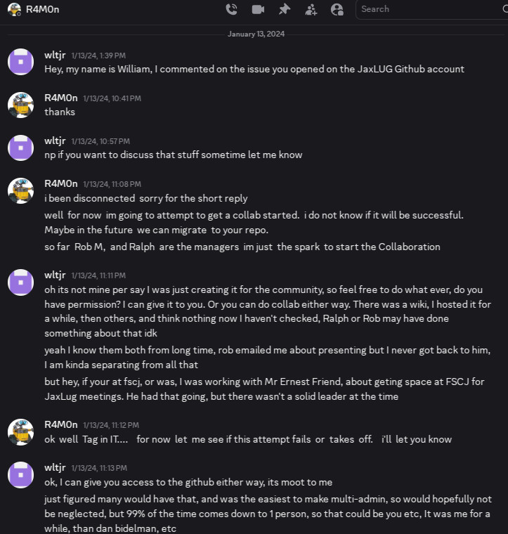

The Story of JaxLUG.net came about!
The Jacksonville Linux Users Group primary domain name from its inception in 1996 through 2023 was JaxLUG.org. This domain name has been lost. Another page covers the story of how that happened. This page covers the story on how JaxLUG.net came about.
JaxLUG.net has never been an official domain, it was registered in bad-faith!
The Beginning

To begin for context, here is a message from William L. Thomson Jr. to the group announcing he would be stepping down from various roles with the JaxLUG in 2011. This is covered in more detail in the story of how JaxLUG.org was lost, and years later in 2013, William was still stuck providing various services. Rather than cooperate to migrate services in a reliable way, without data loss, loss of wiki, and especially, loss of JaxLUG.org domain name, some in the group had other ideas.
To some in the group, their need for control outweighed reliability and the groups reputation, not to mention basic fiduciary duty to protect the groups data, wiki, and assets like JaxLUG.org domain name. These actions were never taken with full support, public discussion, voting, etc. None of these actions were ever fully authorized, as the group was unofficial, so anyone can pretty much do anything as has been the case for far to many years.
Many actions taken to benefit the group, in turn caused considerable harm, years of problems, and things that are just not becoming of such a technical group, and surely not Linux!
Coup d'état

On July 17th, 2013 the unofficial JaxLUG had a meeting where unofficial elections without any records took place in person. The results of which were announced in this message from Gene Cronk regarding new unofficial officers and other changes... This was announcing abandonment of JaxLUG.org, creation of a new wiki under JaxLUG.net domain name, and migrating to Google Groups, which was previous suggested by William.
This was primarily due to the groups inability to host the mailing list, why they move to Google Groups, and despite the comment, no one was seeking to get off the old mailing list, it was to cover the fact no one could host it. This is quite strange, as for a Linux group, anyone can learn to setup and administrate a mail server. That nobody in the group has such ability or knowledge, is simply due to a lack of will.
Rather than cooperate, renew JaxLUG.org domain name, take the entire JaxLUG VM with Wiki, data, and the JaxLUG mail server including the JaxLUG mailing list, a Coup d'état occurred, a new domain JaxLUG.net was acquired, unofficially, without any public group discussion, no discussion on mailing list, the creation of a new Wiki, and migration to Google Groups.
End of Mailing list

This change was a monumental one, for the first time since 1996, the Jacksonville Linux Users Group, JaxLUG, would no longer have a self-hosted mailing list under JaxLUG.org, list@jaxlug.org, as reflected by the end of the JaxLUG mailing list archive on Marc.info.
The first message from Jess Hires went out on the new mailing list on Google Groups, and the rest is history. While on the surface this might seem like a good, host-less, administration-less approach, it was a fundamental change in the group and rather than increasing abilities, reflected further loss and decay of the groups skillset. Also, this had no association with JaxLUG.net, it would take years before Jess Hires made such a suggestion, list.jaxlug.net, in this message years later in 2014.
This brought about immediate confusion in 2013 as stated in this message from Alex Kaplan who also asked about JaxLUG.org going offline. JaxLUG.org DNS record was updated to point to the new wiki under JaxLUG.net, and domain renewed until takeover in 2017. JaxLUG.org domain name was never abandoned, and control of that domain name was transferred in 2017, and lost in 2023... Also as Alex mentioned later on in that message, the begging of the mess as the new Wiki was being spammed, just as the old one was, a problem William dealt with years prior, not occurring in old wiki on JaxLUG.org, among many issues to come with the wiki, like missing data that Alex was looking for! Spam continued to be an issue per this message from Jess Hires.
The Wiki Mess

Now, this section is hard to track accurately and needs to be updated for accuracy, filling in various details, like who hosted the initial wiki under JaxLUG.net. The data on that wiki was entered from scratch, it was not a wiki based on the one hosted under JaxLUG.org, it was not a copy, a backup, etc. It was being manually recreated, as part of the groups efforts to subvert others, as evident by this message from Jess Hires regarding backfilling the wiki. Ever since then, there has been non-stop issues with the wiki, and loss of data at least one other time.
This likely does not cover all, but just to speed through it, the wiki on JaxLUG.net had issues on:
- April 2nd, 2014 per this message from William L. Thomson Jr.
- April 30th, 2015 per this message from William L. Thomson Jr.
- Jun 11th, 2015 per this message from Tim Holloway
- July 3rd, 2015 per this message from Tim Holloway
- Jan 4th, 2023 per this message from Robert Mckennon (server backup files from Michael Potts attached...)
- May 9th, 2024 per this message from Robert Mckennon
Github to the Rescue

Ever since the 2013 Coup d'état, the JaxLUG.net wikis have had various issues. Despite years of reliable hosting, no loss of data, and other things that JaxLUG.org was plagued with in the past, prior to William L. Thomson Jr. unwanted take over of hosting the wiki, and other services. The wikis hosted under JaxLUG.net have had various issues, that continue to this very day. There was interest in pointing JaxLUG.net to this Github hosted Website, as was suggested by William in this message in 2017, to abandon self-hosted wiki, this was realized in 2024.
In 2024 Ramon Dominguez opened a ticket on the JaxLUG Github account, which William L. Thomson Jr. responded to, with William having created the account on Github for JaxLUG years prior, per his past message to the group. Ramon proceeded with creating the foundation to what is this website, as the future reliable home, to end the Wiki mess of years past, and to ideally, finally, get others within the group to collaborator as few if any ever have on any past or present JaxLUG Wiki.
Again, this is a further loss of skillset, as it is trivial to setup a webserver with Linux, and anyone should be able to setup and administration a Wiki using Linux, this like a mail server is something that anyone can do given the will. Though reliable hosting can be difficult, as the group has found out the hard way, and the some in the group lack respect for what it takes to keep things up and running and not lose data.
Losing JaxLUG.net
Just like JaxLUG.org was lost, in 2024 they almost lost JaxLUG.net per this message from Robert Mckennon. In 2025, Christian McLaughlin spent several weeks trying to get access to the JaxLUG.net DNS account. The problems of the past remain, and JaxLUG.net has never resolve any issue, and only created even more issues. At some point this domain maybe acquired by the official Jacksonville Linux Users Group, Inc..
JaxLUG.net has never been the official domain, and its entire lifespan has been plagued with issues!